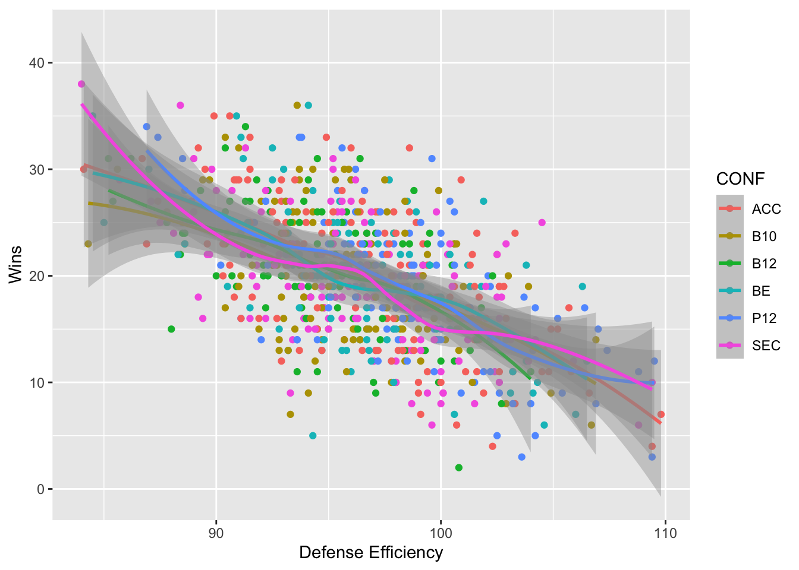
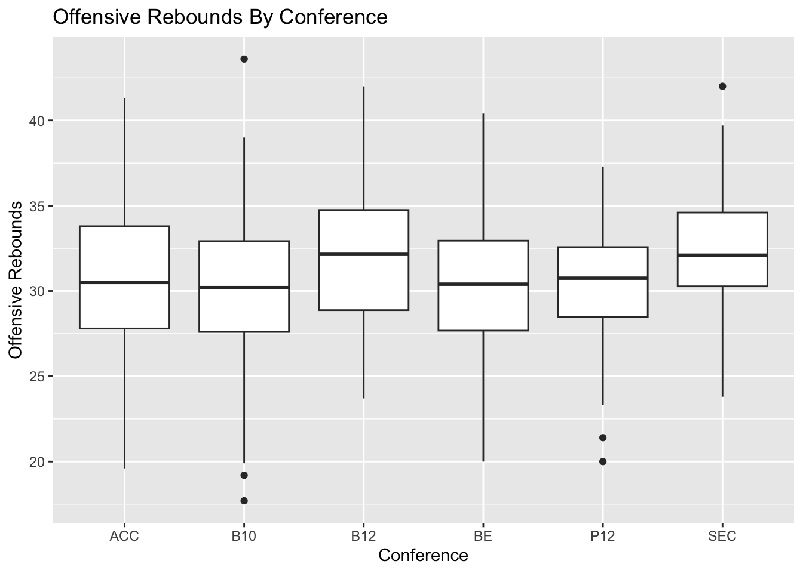

Rows: 476 Columns: 7
── Column specification ────────────────────────────────────────────────────────
Delimiter: ","
chr (1): TEAM
dbl (6): YEAR, TEAM NO, SEED, ROUND, POWER RATING, POWER RATING RANK
ℹ Use `spec()` to retrieve the full column specification for this data.
ℹ Specify the column types or set `show_col_types = FALSE` to quiet this message.
library(readr)cbb <-read_csv("cbb.csv")
Rows: 3523 Columns: 24
── Column specification ────────────────────────────────────────────────────────
Delimiter: ","
chr (4): TEAM, CONF, POSTSEASON, SEED
dbl (20): G, W, ADJOE, ADJDE, BARTHAG, EFG_O, EFG_D, TOR, TORD, ORB, DRB, FT...
ℹ Use `spec()` to retrieve the full column specification for this data.
ℹ Specify the column types or set `show_col_types = FALSE` to quiet this message.
library(dplyr)
Attaching package: 'dplyr'
The following objects are masked from 'package:stats':
filter, lag
The following objects are masked from 'package:base':
intersect, setdiff, setequal, union
── Conflicts ────────────────────────────────────────── tidyverse_conflicts() ──
✖ dplyr::filter() masks stats::filter()
✖ dplyr::lag() masks stats::lag()
ℹ Use the conflicted package (<http://conflicted.r-lib.org/>) to force all conflicts to become errors
Warning in simpleLoess(y, x, w, span, degree = degree, parametric = parametric,
: reciprocal condition number 0
Warning in simpleLoess(y, x, w, span, degree = degree, parametric = parametric,
: There are other near singularities as well. 4.1412
Warning in predLoess(object$y, object$x, newx = if (is.null(newdata)) object$x
else if (is.data.frame(newdata))
as.matrix(model.frame(delete.response(terms(object)), : span too small. fewer
data values than degrees of freedom.
Warning in predLoess(object$y, object$x, newx = if (is.null(newdata)) object$x
else if (is.data.frame(newdata))
as.matrix(model.frame(delete.response(terms(object)), : pseudoinverse used at
2016
Warning in predLoess(object$y, object$x, newx = if (is.null(newdata)) object$x
else if (is.data.frame(newdata))
as.matrix(model.frame(delete.response(terms(object)), : neighborhood radius
6.035
Warning in predLoess(object$y, object$x, newx = if (is.null(newdata)) object$x
else if (is.data.frame(newdata))
as.matrix(model.frame(delete.response(terms(object)), : reciprocal condition
number 0
Warning in predLoess(object$y, object$x, newx = if (is.null(newdata)) object$x
else if (is.data.frame(newdata))
as.matrix(model.frame(delete.response(terms(object)), : There are other near
singularities as well. 4.1412
Warning in max(ids, na.rm = TRUE): no non-missing arguments to max; returning
-Inf
library(tidyverse)ggplot(CONF_win_perc, aes(x = CONF, y = win_percentage, fill = win_percentage)) +geom_col() +coord_flip() +labs(title ="Win Percentage by Conference",x ="Conference",y ="Win Percentage (%)",fill ="Win Rate (%)" ) +scale_fill_gradient(low ="lightblue", high ="darkblue") +theme_minimal() +theme(axis.text.y =element_text(size =8))
Warning: Removed 1 row containing missing values or values outside the scale range
(`geom_col()`).
march_madness_new |>filter(CONF %in%c("ACC", "B10", "B12", "SEC", "P12", "BE")) |>ggplot(aes(x =`3P_O`, y = W)) +geom_point() +geom_smooth() +facet_wrap(~CONF) +labs(title ="3 Point % Impact on Wins",x ="3 Point %", y ="Number of Wins")
`geom_smooth()` using method = 'loess' and formula = 'y ~ x'
march_madness_new |>filter(ROUND =="1") |>group_by(TEAM) |>ggplot(aes(x = TEAM, y =`3P_O`)) +geom_point() +labs(title ="Champions 3 Point %")
march_madness_new |>filter(CONF %in%c("ACC", "B10", "B12", "SEC", "P12", "BE")) |>ggplot(aes (x = ADJDE, y = W, color = CONF)) +geom_point() +geom_smooth() +labs(x ="Defense Efficiency", y ="Wins")
`geom_smooth()` using method = 'loess' and formula = 'y ~ x'

march_madness_new |>filter(CONF %in%c("ACC", "B10", "B12", "SEC", "P12", "BE")) |>ggplot(aes(x = CONF, y = ORB)) +geom_boxplot() +labs(title ="Offensive Rebounds By Conference", x ="Conference", y ="Offensive Rebounds")

#This plot helps explain the strong paint presence in the SEC, showing why they are still able to compete at a high level in March Madness despite lower 3 point percentages.
Source Code
# Sketch {.unnumbered}```{r}library(readr)march_madness <-read_csv("538 Ratings.csv")library(readr)cbb <-read_csv("cbb.csv")``````{r}library(dplyr)library(tidyverse)march_madness |>str()``````{r}march_madness |>ggplot(aes(x =`POWER RATING`)) +geom_density()``````{r}march_madness |>filter(TEAM =="Duke") |>ggplot(aes(x = YEAR, y = SEED)) +geom_point()``````{r}uconn <- march_madness|>filter(TEAM =="Connecticut")uconn |>ggplot(aes(x = YEAR, y = ROUND)) +geom_point() +geom_smooth()``````{r} march_madness_new <- march_madness |>mutate(SEED =as.character(SEED))march_madness_new <- march_madness_new|>full_join(cbb)``````{r}march_madness_new |>aggregate(`3P_O`~ CONF + YEAR, FUN = mean) |>filter(CONF %in%c("ACC", "B10", "B12", "SEC", "P12", "BE")) |># filter(YEAR == "2016") |>ggplot(aes(x = CONF, y =`3P_O`)) +geom_boxplot() +labs(title ="3 Point Percentage by Conference", x ="Conference",y ="3 Point %") +theme_minimal()``````{r}CONF_win_perc <- march_madness_new |>group_by(CONF) |>summarise(total_games_played =sum(G, na.rm =TRUE),total_games_won =sum(W, na.rm =TRUE),win_percentage = total_games_won / total_games_played *100 )``````{r}library(tidyverse)ggplot(CONF_win_perc, aes(x = CONF, y = win_percentage, fill = win_percentage)) +geom_col() +coord_flip() +labs(title ="Win Percentage by Conference",x ="Conference",y ="Win Percentage (%)",fill ="Win Rate (%)" ) +scale_fill_gradient(low ="lightblue", high ="darkblue") +theme_minimal() +theme(axis.text.y =element_text(size =8))``````{r}march_madness_new |>filter(CONF %in%c("ACC", "B10", "B12", "SEC", "P12", "BE")) |>ggplot(aes(x =`3P_O`, y = W)) +geom_point() +geom_smooth() +facet_wrap(~CONF) +labs(title ="3 Point % Impact on Wins",x ="3 Point %", y ="Number of Wins")``````{r}march_madness_new |>filter(ROUND =="1") |>group_by(TEAM) |>ggplot(aes(x = TEAM, y =`3P_O`)) +geom_point() +labs(title ="Champions 3 Point %")``````{r}march_madness_new |>filter(ROUND =="1") |>arrange(TOR)# all winning teams had turnover rates lower than 20%, meaning they turn the ball over on fewer than 20% of their possessions``````{r}CONF_win_perc |>arrange(desc(win_percentage))``````{r}march_madness_new |>filter(CONF %in%c("ACC", "B10", "B12", "SEC", "P12", "BE")) |>ggplot(aes (x = ADJDE, y = W, color = CONF)) +geom_point() +geom_smooth() +labs(x ="Defense Efficiency", y ="Wins")``````{r}march_madness_new |>filter(CONF %in%c("ACC", "B10", "B12", "SEC", "P12", "BE")) |>ggplot(aes(x = CONF, y = ORB)) +geom_boxplot() +labs(title ="Offensive Rebounds By Conference", x ="Conference", y ="Offensive Rebounds")#This plot helps explain the strong paint presence in the SEC, showing why they are still able to compete at a high level in March Madness despite lower 3 point percentages. ```